Salade (30 recettes)
5 avis
♡
Recettes VégétariennesRepas du mondeSalade
Bo bun végétarien
 ♡
♡
Recettes VégétariennesRepas LightSalade
Réalisez une plancha 100% végétarienne #1
2 avis
♡
Recettes VégétariennesRepas LightSalade
Réalisez une plancha 100% végétarienne #2
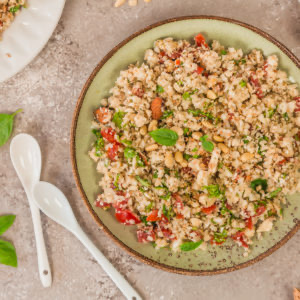
4 avis ♡Recettes VégétariennesRepas LightSalade
Taboulé de chou fleur
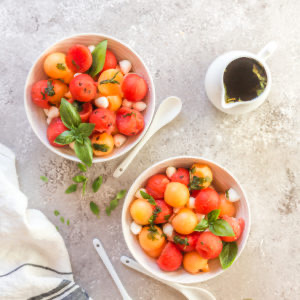
4 avis ♡Recettes VégétariennesRepas LightSalade
Salade de melon, pastèque et sirop de Basilic
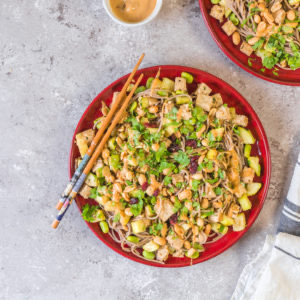
2 avis ♡Recettes VégétariennesRepas du mondeSalade
Nouilles Soba au tofu et aux courgettes
 7 avis
♡
7 avis
♡
ApéritifBoulangeBrunch
Socca au four
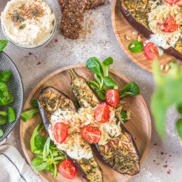
5 avis ♡Recettes VégétariennesRepas LightSalade
Aubergines au four
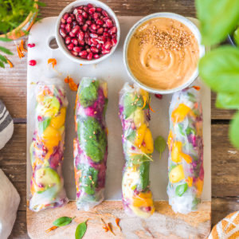
4 avis ♡Recettes VégétariennesRepas du mondeRepas Light
Rouleaux de printemps végétariens
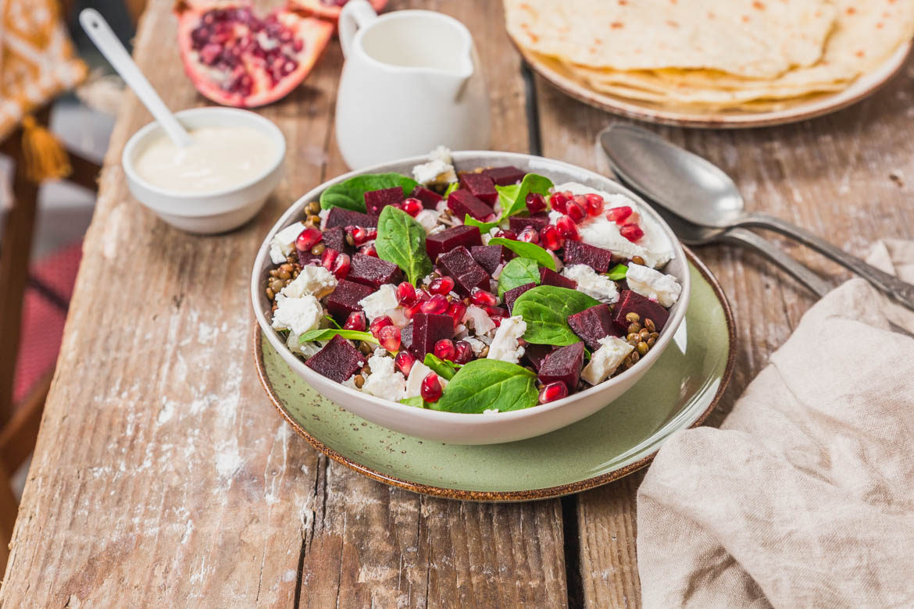
4 avis ♡Recettes VégétariennesRepas LightSalade
Salade de betteraves et sauce tahine
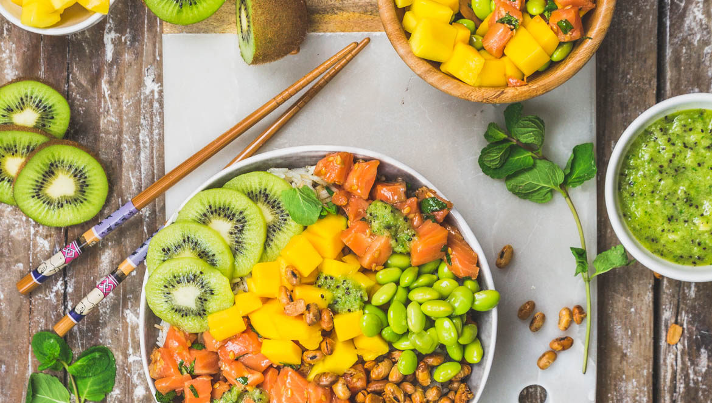
1 avis ♡SaladeSalé
Buddha bowl au saumon et aux kiwis
 6 avis
♡
6 avis
♡
Repas LightSaladeSalé
Bol de quinoa, falafels, avocat et haricots blancs
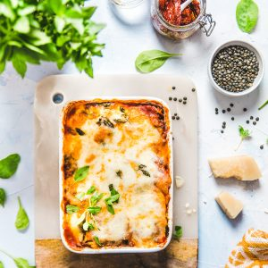
25 avis ♡Pâtes et GnocchisSaladeSalé
Lasagnes végétariennes
 17 avis
♡
17 avis
♡
ApéritifRepas LightSalade
Verrine de quinoa au chèvre frais et petits légumes
 4 avis
♡
4 avis
♡
Pâtes et GnocchisRepas LightSalade
Salade de pâtes aux légumes
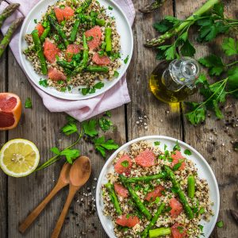
12 avis ♡Repas LightSaladeSalé
Salade de quinoa asperges vertes et pamplemousse
 10 avis
♡
10 avis
♡
BrunchRepas LightSalade
Salade de riz orange avocat
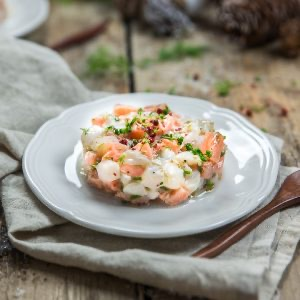
11 avis ♡De la merNoëlRepas Light
Tartare de saumon et Saint-Jacques
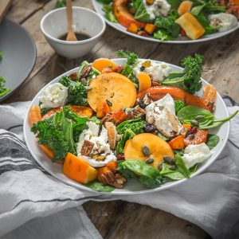
11 avis ♡Repas LightSaladeSalé
Salade de potimarron rôti chou kale et épinards
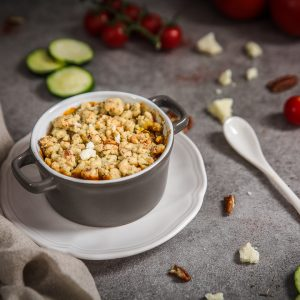
17 avis ♡SaladeSalé
Crumble de tomates et courgettes
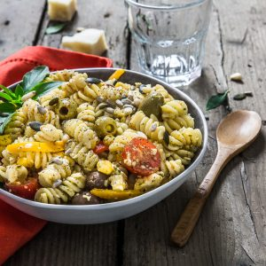
20 avis ♡Pâtes et GnocchisSaladeSalé
Salade de pâtes au pesto
 10 avis
♡
10 avis
♡
Repas LightSaladeSalé
Ratatouille
 12 avis
♡
12 avis
♡
BrunchSaladeSucré
Salade de fraises menthe et citron
 8 avis
♡
8 avis
♡
Pâtes et GnocchisSaladeSalé
Salade de figues
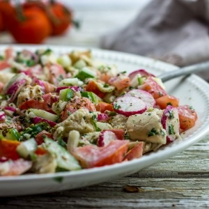
11 avis ♡Repas LightSaladeSalé
Salade composée
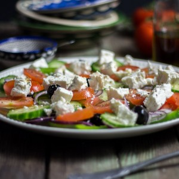
12 avis ♡Repas du mondeRepas LightSalade
Salade grecque comme à Rhodes
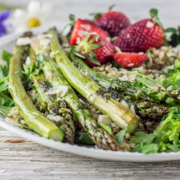
8 avis ♡SaladeSalé
Salade asperges quinoa brocolis fraises – sauce tahine
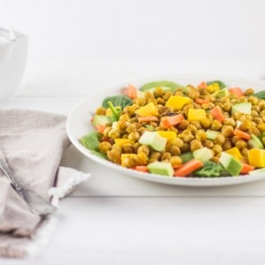
20 avis ♡Repas LightSaladeSalé
Salade de pois chiches végétarienne
 4 avis
♡
4 avis
♡
Repas LightSaladeSalé
Salade épinards-champignons-jambon
 15 avis
♡
15 avis
♡
Repas du mondeRepas LightSalade